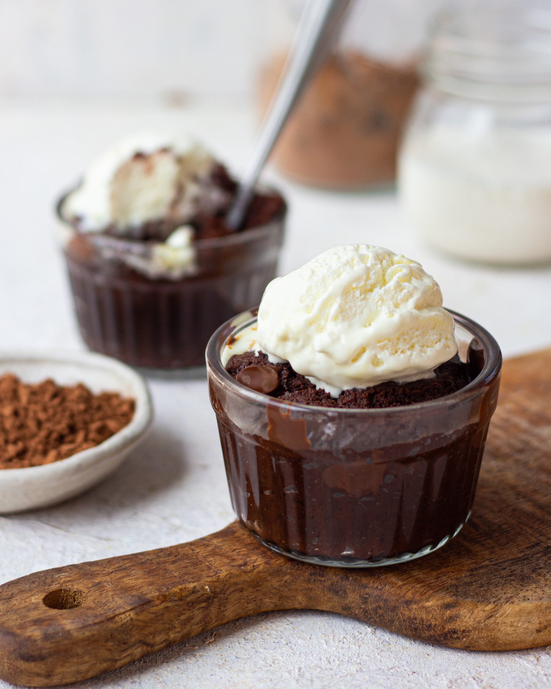

1 MINUTE CHOCOLATE FUDGE CAKE
Prep Time: 5 minutes
Cook Time: 1 minutea
Total Time: 6 minutes
Serves: 1
Ingredients:
- 2 tbsp dark chocolate
- 1 tbsp butter
- 2 tbsp caster sugar
- 2 tbsp yogurt
- ¼ cup all purpose flour
- 1 tbsp cocoa powder
- ⅛ tsp baking powder
- chocolate chips to top
- vanilla icecream to serve

Instructions:
- Melt chocolate and butter in the microwave
- Add in the sugar and yogurt and mix well
- Lastly fold in all the dry ingredients and top some dark chocolate chips
- Cook in microwave for 1 minute, add some vanilla icecream and serve hot.
Source: Bake with Shivesh